首页 > 编程笔记
电阻是什么（超级详细）
电阻在电子设计中最为常见，几乎所有的电子产品中都会使用此元件。
电阻元件，简称电阻，其图形符号可以表示为图 1a) 所示。
在理想情况下，一般认为电阻具有以下特性：在任何时刻其两端的电压和电流都服从欧姆定律，即 U = R × I。式中，R 为电阻最重要的参数，称为元件的电阻值，单位为 Ω（欧姆，简称欧）；U 为电阻两端电压，单位为 V（伏特，简称伏）；I 为流过电阻两端电流，单位为 A（安培，简称安）。
如果绘制一条曲线，将电压作为横坐标，电流作为纵坐标，则根据电阻的伏安特性可以得到一条经过原点的曲线，由于电压与电流单位分别伏特与安培，因此可以称此曲线为电阻的伏安特性曲线，如图 1b) 所示。
可以看出理想电阻属于线性元件，在理想状态下，电阻的电阻值是固定不变的。但在实际中，电阻值通常会随着温度的变化而变化，因此，严格地说电阻是带有非线性因素的。而且由于工艺的限制，电阻也是会存在误差的，普通电阻精度通常分为 ±1%、±5%、±10%3 种。
正常情况下，当电压加载在电阻两端时，就会有电流经过电阻，电阻则会消耗电能，其消耗的功率为
在电阻上消耗的电能为：
电阻一般会将消耗的电能转换成热能，如果消耗电能较大，电阻会发出较大热量，从而改变电阻自身与环境的温度。由于材料的限制，电子元件只能在一定范围的温度下正常工作，否则会烧坏元件。因此在实际的设计工作中，需要从功率的角度合理选择电阻。
在实际的生产过程中，厂家通常只会生产固定阻值的电阻，因此对于非标准值的电阻则可以通过电阻的串、并联电路来得到。
如图 2a) 为 n 个电阻 R1，R2，...，Rn 的串联：
串联电路等效电阻 R′ 的计算公式为：
在串联电路中流过所有电阻的电流均相等，当 R1=R2=...=Rn=R 时，每个电阻两端的电压 Un=U/n，且等效电阻 R′=nR，可求得每个电阻消耗的功率：
并且每个电阻消耗的功率为等效电阻 R′ 的 1/n。
如图 3a) 为 n 个电阻 R1，R2，...，Rn 的并联组合：
并联电路等效电阻 R 的计算公式为：
在并联电阻中所有电阻两端电压相等，当 R1=R2=...=Rn 时，等效电阻 R=R1/n。类似地，也可求得每个电阻消耗的功率为等效电阻 R 的 1/n。
因此，通过串并联组合电路不仅能够得到任意电阻值，而且可以提高等效电阻的实际功率。假设某一电阻值为 R 的电阻最大只能承受 1/4W 的功率，那么可以通过 4 个电阻值为 4R 的电阻并联或者 4 个电阻值为 R/4 的电阻串联得到等效电阻 R，那么此等效电阻最大可承受 1W 的功率。
可以按照伏安特性曲线的线性与非线性，将电阻划分为线性电阻与非线性电阻。
可以从封装形式上将电阻分为接线柱式、直插式和贴片式 3 种，接线柱式电阻实物如图 4a) 所示，通常用于大功率电阻中。直插式与贴片式电阻通常用于小功率电阻中，直插式电阻实物如图 4b) 所示，贴片式电阻实物如图 4c) 所示。
对于小功率直插电阻可以根据表面色环来获取电阻值。不同颜色代表不同的数字含义，通过色环的组合表达电阻阻值和精度的信息。最为常见的是五环电阻，其中，第 1~3 环代表阻值的3位有效数；第 4 环代表阻值有效数应乘的倍数；第 5 环代表电阻的误差精度范围。
具体对应颜色代表含义如下表所示：
例如，下图所示为五环电阻：
第 1 环为黄色代表 4，第 2 环为紫色为 7，第 3 环为黑色代表 0，第 4 环为黄色代表 3，也就是需要乘以 103，第 5 环为棕色代表误差为 ±1%。根据这些色环信息可以计算出电阻值 R=470×1000Ω=470kΩ，因此这个电阻阻值范围是 465.3~474.7kΩ。
对于贴片式电阻可以根据电阻表面数字直接判断。通常用 3 位数字来标明其阻值：第 1 位和第 2 位为有效数字，第 3 位表示需要乘以的倍数信息。例如电阻“472”表明电阻值 R=47×102Ω=4700Ω=4.7kΩ。如电阻值需要包含小数信息，则通过字母“R”代表小数点，例如，电阻“2R2”代表电阻值为 2.2Ω，电阻“R15”代表电阻值为 0.15Ω 等。
按照按阻值特性可将电阻分为固定电阻与可调电阻。阻值不可调节的称为固定电阻。可调电阻也称电位器，可以通过开发者手动调节其阻值，其图形符号与常用实物图如下图所示：
按照制造材料可将电阻分为金属膜电阻、金属氧化膜电阻、碳膜电阻、无感电阻、特种电阻等，具体特性如下表所示。
电阻元件，简称电阻，其图形符号可以表示为图 1a) 所示。
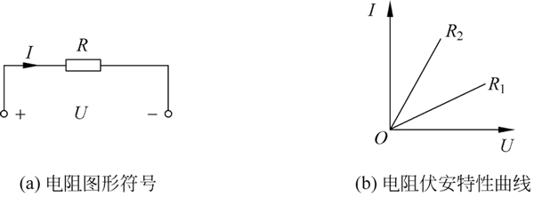
图 1 电阻的图形符号及其伏安特性曲线
图 1 电阻的图形符号及其伏安特性曲线
在理想情况下，一般认为电阻具有以下特性：在任何时刻其两端的电压和电流都服从欧姆定律，即 U = R × I。式中，R 为电阻最重要的参数，称为元件的电阻值，单位为 Ω（欧姆，简称欧）；U 为电阻两端电压，单位为 V（伏特，简称伏）；I 为流过电阻两端电流，单位为 A（安培，简称安）。
如果绘制一条曲线，将电压作为横坐标，电流作为纵坐标，则根据电阻的伏安特性可以得到一条经过原点的曲线，由于电压与电流单位分别伏特与安培，因此可以称此曲线为电阻的伏安特性曲线，如图 1b) 所示。
可以看出理想电阻属于线性元件，在理想状态下，电阻的电阻值是固定不变的。但在实际中，电阻值通常会随着温度的变化而变化，因此，严格地说电阻是带有非线性因素的。而且由于工艺的限制，电阻也是会存在误差的，普通电阻精度通常分为 ±1%、±5%、±10%3 种。
正常情况下，当电压加载在电阻两端时，就会有电流经过电阻，电阻则会消耗电能，其消耗的功率为
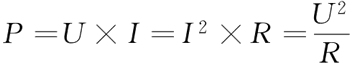
在电阻上消耗的电能为：
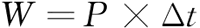
电阻一般会将消耗的电能转换成热能，如果消耗电能较大，电阻会发出较大热量，从而改变电阻自身与环境的温度。由于材料的限制，电子元件只能在一定范围的温度下正常工作，否则会烧坏元件。因此在实际的设计工作中，需要从功率的角度合理选择电阻。
在实际的生产过程中，厂家通常只会生产固定阻值的电阻，因此对于非标准值的电阻则可以通过电阻的串、并联电路来得到。
如图 2a) 为 n 个电阻 R1，R2，...，Rn 的串联：
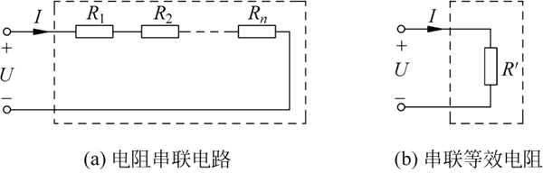
图 2 多电阻串联
图 2 多电阻串联
串联电路等效电阻 R′ 的计算公式为：
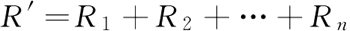
在串联电路中流过所有电阻的电流均相等，当 R1=R2=...=Rn=R 时，每个电阻两端的电压 Un=U/n，且等效电阻 R′=nR，可求得每个电阻消耗的功率：
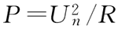
并且每个电阻消耗的功率为等效电阻 R′ 的 1/n。
如图 3a) 为 n 个电阻 R1，R2，...，Rn 的并联组合：
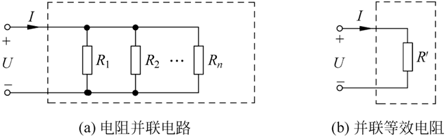
图 3 多电阻并联
图 3 多电阻并联
并联电路等效电阻 R 的计算公式为：
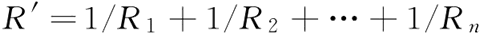
在并联电阻中所有电阻两端电压相等，当 R1=R2=...=Rn 时，等效电阻 R=R1/n。类似地，也可求得每个电阻消耗的功率为等效电阻 R 的 1/n。
因此，通过串并联组合电路不仅能够得到任意电阻值，而且可以提高等效电阻的实际功率。假设某一电阻值为 R 的电阻最大只能承受 1/4W 的功率，那么可以通过 4 个电阻值为 4R 的电阻并联或者 4 个电阻值为 R/4 的电阻串联得到等效电阻 R，那么此等效电阻最大可承受 1W 的功率。
实际电阻
在实际应用中，不仅电阻值存在不同，电阻的封装形式、阻值特性、制造材料也存在差异。可以按照伏安特性曲线的线性与非线性，将电阻划分为线性电阻与非线性电阻。
- 线性电阻表现形式为伏安特性曲线斜率固定，虽然可能因为温度因素造成电阻值存在误差，但可以认为其电阻值固定不变。
- 非线性电阻表现形式为其伏安特性曲线斜率不固定，例如半导体，此类电阻值会跟随电压变化而变化。甚至出现斜率为负数的情况，此时电阻呈现负电阻特性，即在电阻两端增加电压，但流过电阻的电流反而减少。
可以从封装形式上将电阻分为接线柱式、直插式和贴片式 3 种，接线柱式电阻实物如图 4a) 所示，通常用于大功率电阻中。直插式与贴片式电阻通常用于小功率电阻中，直插式电阻实物如图 4b) 所示，贴片式电阻实物如图 4c) 所示。
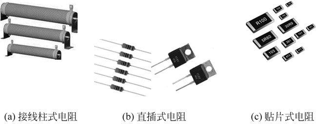
图 4 电阻实物图
图 4 电阻实物图
对于小功率直插电阻可以根据表面色环来获取电阻值。不同颜色代表不同的数字含义，通过色环的组合表达电阻阻值和精度的信息。最为常见的是五环电阻，其中，第 1~3 环代表阻值的3位有效数；第 4 环代表阻值有效数应乘的倍数；第 5 环代表电阻的误差精度范围。
具体对应颜色代表含义如下表所示：
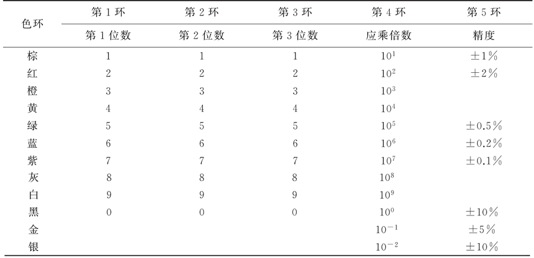
表: 电阻色环含义对照表
表: 电阻色环含义对照表
例如，下图所示为五环电阻：
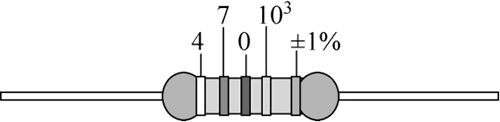
图 5 五环电阻
图 5 五环电阻
第 1 环为黄色代表 4，第 2 环为紫色为 7，第 3 环为黑色代表 0，第 4 环为黄色代表 3，也就是需要乘以 103，第 5 环为棕色代表误差为 ±1%。根据这些色环信息可以计算出电阻值 R=470×1000Ω=470kΩ，因此这个电阻阻值范围是 465.3~474.7kΩ。
对于贴片式电阻可以根据电阻表面数字直接判断。通常用 3 位数字来标明其阻值：第 1 位和第 2 位为有效数字，第 3 位表示需要乘以的倍数信息。例如电阻“472”表明电阻值 R=47×102Ω=4700Ω=4.7kΩ。如电阻值需要包含小数信息，则通过字母“R”代表小数点，例如，电阻“2R2”代表电阻值为 2.2Ω，电阻“R15”代表电阻值为 0.15Ω 等。
按照按阻值特性可将电阻分为固定电阻与可调电阻。阻值不可调节的称为固定电阻。可调电阻也称电位器，可以通过开发者手动调节其阻值，其图形符号与常用实物图如下图所示：
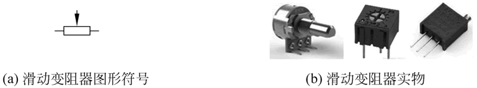
图 6 电位器图形符号与实物图
图 6 电位器图形符号与实物图
按照制造材料可将电阻分为金属膜电阻、金属氧化膜电阻、碳膜电阻、无感电阻、特种电阻等，具体特性如下表所示。
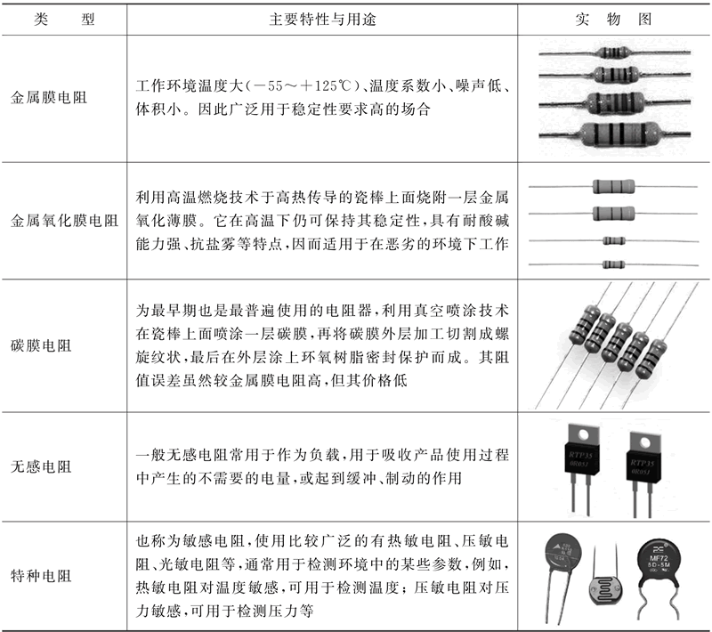
表: 不同材料电阻特性表
表: 不同材料电阻特性表
关注公众号「站长严长生」，在手机上阅读所有教程，随时随地都能学习。内含一款搜索神器，免费下载全网书籍和视频。

微信扫码关注公众号